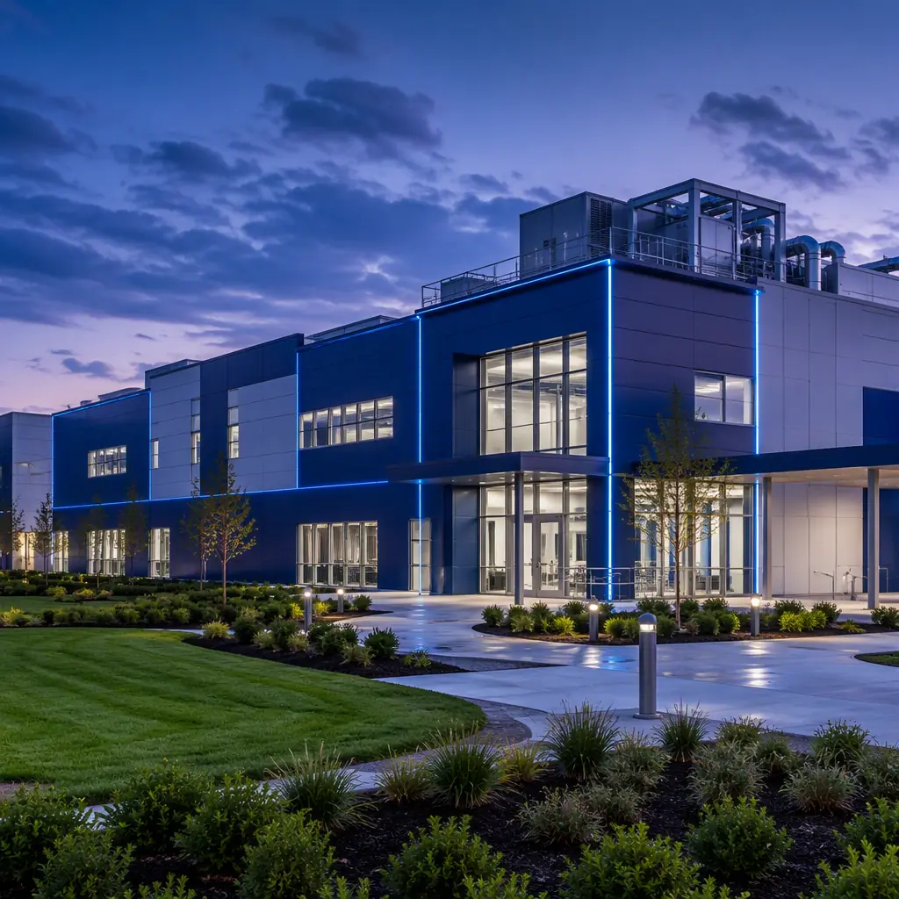
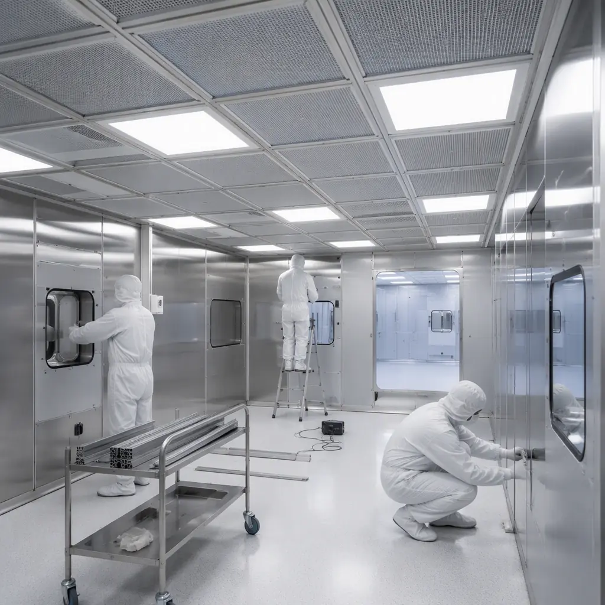
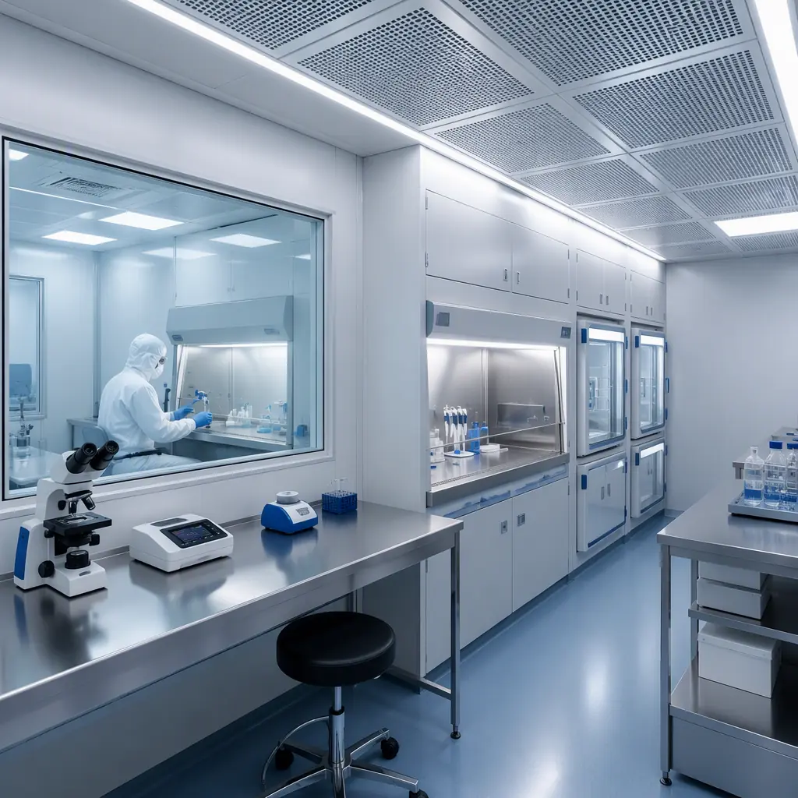
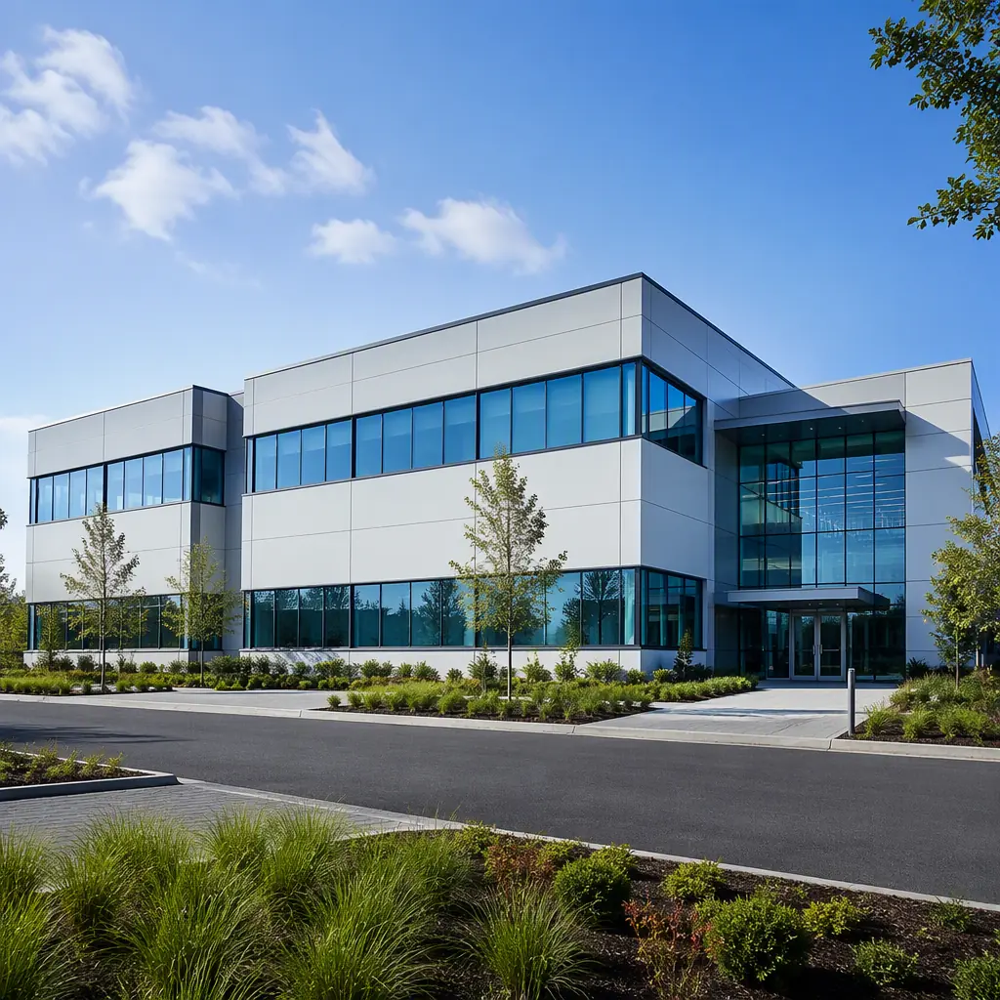

The life sciences sector is growing at 7.2% CAGR globally, driven by cell and gene therapy breakthroughs, mRNA platform expansion, and the biologics pipeline that now represents 40% of new drug approvals. But the facilities that house this innovation are bottlenecked. A typical BSL-2 laboratory or ISO 7 cleanroom suite takes 18–24 months to design, permit, construct, commission, and validate — and in biotech, 18 months is the difference between first-to-market and also-ran. Modular construction changes this equation by delivering pre-validated laboratory and cleanroom modules with factory-integrated mechanical systems, regulatory-ready documentation packages, and construction timelines of 9–14 months from contract to occupancy. This article explains how modular construction serves the specific engineering, regulatory, and speed-to-market requirements of biotech and life sciences facilities.

The Biotech Construction Problem: Speed, Sterility, and Validation
Life sciences facilities are not just buildings with laboratories inside them — they are integrated systems where the building structure, mechanical systems, and scientific workflows are interdependent. A biosafety cabinet cannot function without the correct HVAC pressure cascade. An autoclave cannot operate without the correct steam quality and condensate drainage. A cell processing suite cannot maintain sterility if the cleanroom envelope has unsealed penetrations. These interdependencies mean that construction defects in a biotech facility are not cosmetic — they are operational failures that delay validation and regulatory approval.
Three structural problems define biotech facility construction today:
- Validation sequencing. In a traditional site-built facility, the HVAC system, cleanroom envelope, and utility systems are commissioned sequentially — HVAC first, then envelope integrity testing, then utility qualification, then integrated systems testing. Each step depends on the previous step being complete, and each step discovers defects that require rework. The validation process for a 20,000 sq ft cGMP facility typically takes 4–6 months, during which the facility is consuming carrying costs (lease, utilities, security) without generating revenue. Modular construction compresses this by enabling parallel factory validation: module HVAC systems can be commissioned and balanced in the factory, cleanroom envelopes can be integrity-tested before module shipment, and utility systems can be qualified at the module level, reducing site validation to module-to-module interface testing rather than whole-facility commissioning.
- Cleanroom envelope integrity. An ISO 7 cleanroom requires fewer than 352,000 particles ≥0.5 μm per cubic meter of air. Achieving this particle count requires an airtight envelope with HEPA-filtered supply air, controlled pressure differentials between adjacent spaces, and precisely managed air change rates (typically 30–60 air changes per hour for ISO 7). In site-built construction, the cleanroom envelope is assembled from modular wall panels, ceiling grids, and sealed floor systems — all installed by trades who do not typically work to cleanroom tolerances. The result is a 2–4 week punch list of envelope leaks discovered during certification testing. In a factory-built module, the cleanroom envelope is assembled under controlled conditions by a dedicated team, with smoke testing and particle counting performed at the module level before the module leaves the factory. The punch list shrinks from weeks to hours.
- Utility qualification. Biotech facilities require validated utilities: Water for Injection (WFI), clean steam, compressed air (oil-free, dried, and filtered to 0.01 μm), and process gases (nitrogen, carbon dioxide, oxygen). Each utility system must be installed, pressure-tested, passivated (for stainless steel systems), and qualified with documented performance data. In a modular facility, these systems are pre-installed in the factory, tested at the module level, and connected at module-to-module interface points on site — reducing the scope of site utility qualification by 60–80%.

Biosafety Levels: BSL-2 and BSL-3 Modular Design
Biosafety levels define the containment requirements for laboratories handling biological agents. BSL-2 is the standard for clinical diagnostic labs, university research labs, and pharmaceutical quality control labs — handling agents like Staphylococcus aureus, hepatitis B virus, and HIV. BSL-3 is required for facilities handling airborne-transmissible pathogens like Mycobacterium tuberculosis, SARS-CoV-2 (certain research contexts), and Coxiella burnetii. The containment requirements escalate dramatically between BSL-2 and BSL-3, and modular construction serves both levels with factory-engineered solutions.
BSL-2 modular requirements. The primary containment feature in BSL-2 is the biosafety cabinet (Class II Type A2 or B2), which provides personnel, product, and environmental protection through HEPA-filtered airflow. The modular building must support the cabinet with: dedicated exhaust ductwork (Type B2 cabinets require hard-ducted exhaust to the exterior, not recirculating), a laboratory ventilation system providing 6–12 air changes per hour with directional airflow from clean to potentially contaminated areas, and autoclave infrastructure for waste decontamination (typically a pass-through autoclave with a biological seal between the containment and non-containment sides). MODURA's BSL-2 modules integrate these systems at the factory level, with the biosafety cabinet exhaust, laboratory supply/exhaust ductwork, and autoclave utility connections pre-routed through the module ceiling void.
BSL-3 modular requirements. BSL-3 adds three critical containment features beyond BSL-2: the laboratory must be at negative pressure relative to adjacent spaces (typically -0.05 to -0.10 inches water column), all exhaust air must be HEPA-filtered before release to the environment (not just biosafety cabinet exhaust but the entire laboratory exhaust), and the envelope must be sealable for gaseous decontamination (typically with paraformaldehyde or vaporized hydrogen peroxide). These requirements make BSL-3 modular construction particularly well-suited to factory fabrication, because the envelope sealing, pressure cascade testing, and HEPA filter installation certification can all be performed and documented at the factory — eliminating the risk of site construction defects that compromise containment. For a broader look at laboratory construction across all biosafety levels, our lab and research facilities guide covers the full range of scientific building types.
| Facility Type | Cleanroom Class | ACH Range | Pressure Regime | Modular Timeline |
|---|---|---|---|---|
| Cell therapy processing suite | ISO 7 (Grade B/C) | 40–60 | Positive cascade (ISO 5 > ISO 7 > ISO 8) | 8–12 months |
| Gene therapy viral vector production | ISO 7/8 (Grade C/D) | 30–50 | Negative to corridor, positive cascade internally | 9–13 months |
| BSL-3 laboratory | N/A (containment, not clean) | 10–15 | Negative to all adjacent spaces | 10–14 months |
| Quality control microbiology lab | ISO 7/8 (local ISO 5) | 25–40 | Positive to corridor | 7–11 months |
Cell and Gene Therapy: The Highest-Stakes Cleanroom Application
Cell and gene therapy (CGT) manufacturing represents the most demanding cleanroom application in the life sciences sector — and the strongest case for modular construction. A CGT facility must simultaneously satisfy: aseptic processing requirements (FDA 21 CFR Part 211, EU GMP Annex 1), segregated patient-specific material flows (each patient's cells must never contact another patient's cells), chain of custody documentation from apheresis collection through final product release, and environmental monitoring that records viable and non-viable particulate counts at every processing step.
The cost of a CGT cleanroom suite is driven less by construction materials and more by the density of HVAC, electrical, and control systems. A 5,000 sq ft CGT processing suite typically requires: 60–80 tons of cooling capacity (12–16 tons per 1,000 sq ft, 3–4 times the cooling density of commercial office space), 20–30 air changes per hour across ISO 7 processing rooms, 6–8 AHUs with HEPA terminal filtration, a building automation system with 200–400 monitoring points (temperature, humidity, pressure differential, particle count), and emergency power for all critical systems (refrigeration for cell storage, HVAC for cleanroom pressurization, monitoring and alarm systems). These systems cost $800–$1,200 per sq ft to install in a traditional site-built facility; modular construction reduces installation cost by 15–25% through factory labor efficiency and eliminates 60–70% of the on-site commissioning effort.
For the regulatory framework that governs CGT facility validation, our pharmaceutical GMP facilities guide covers FDA and EMA compliance requirements, including the all-important pre-approval inspection (PAI) preparation. For cleanroom infrastructure across semiconductor and electronics applications, see our semiconductor cleanroom facilities guide.

HVAC: The Heart of Biotech Modular Design
If cleanroom envelope integrity is the skin of a biotech facility, HVAC is the circulatory system. Biotech HVAC systems differ from commercial HVAC in four critical respects, and modular construction addresses each at the factory level:
- Air change rates. A commercial office delivers 4–6 air changes per hour (ACH). An ISO 7 cleanroom delivers 30–60 ACH. An ISO 5 (Grade A) zone within a cleanroom — the critical processing area where sterile product is exposed — delivers 300–600 ACH through unidirectional (laminar) airflow at 90 feet per minute face velocity. These airflow volumes require ductwork cross-sections, fan motor sizes, and electrical service capacities that are 5–10 times larger than commercial equivalents on a per-square-foot basis. Modular construction integrates these oversized systems into the module structure from the start, with duct risers pre-sized and pre-installed, rather than retrofitting commercial building shells that were never designed for cleanroom airflow demands.
- Pressure cascade control. Cleanroom suites operate on pressure differentials: the cleanest space is at the highest positive pressure, with air cascading outward to progressively less clean spaces. A typical suite maintains ISO 5 at +0.05 inches water column (in. WC), cascading to ISO 7 at +0.03 in. WC, cascading to ISO 8 at +0.01 in. WC, relative to an unclassified corridor. Maintaining these cascades requires precise control of supply and exhaust air volumes, with VAV boxes responding to real-time pressure sensor inputs. In a site-built facility, pressure cascade commissioning is one of the longest-duration commissioning activities because every door opening, every duct leak, and every filter loading condition affects the balance. In a modular facility, the pressure cascade is established and verified at the factory before module shipment, using temporary airtight bulkheads at the module interface points. Site commissioning then verifies that the cascades hold across module-to-module interfaces — a much smaller scope than commissioning the entire suite from scratch.
- Temperature and humidity control. Biotech processes often require tight temperature (±1°C) and humidity (±5% RH) control, not for occupant comfort but for process stability. Cell culture incubators, analytical balances, and PCR thermal cyclers are all sensitive to ambient conditions. Modular construction's factory environment allows these tight-control HVAC systems to be tuned and verified under controlled conditions before module shipment, rather than attempting to achieve ±1°C stability on a construction site with open doors and incomplete building envelope.
- Redundancy and emergency power. A biotech facility storing patient cells, clinical trial materials, or production cell banks at -150°C in liquid nitrogen vapor phase freezers cannot tolerate an HVAC failure that allows ambient temperature and humidity to spike. Modular construction allows redundant HVAC systems (N+1 or 2N configuration) to be pre-installed and pre-tested in the factory, with automatic failover logic verified before the module leaves the production line.

Regulatory Documentation: The Modular Paper Trail Advantage
In life sciences construction, the documentation is as important as the construction itself. FDA investigators and EU Qualified Persons do not just inspect the facility — they inspect the records that prove the facility was built correctly. Material certifications, weld inspection reports, pressure test certificates, cleanroom certification reports, and HVAC balancing reports form the documentary foundation for regulatory approval. A facility with excellent construction but incomplete documentation will fail a pre-approval inspection as surely as a facility with construction defects.
Modular construction's factory environment generates documentation as a byproduct of the production process. Every structural weld receives an ultrasonic test report with a unique identifier that maps to the specific weld location. Every HEPA filter receives a factory certification test (typically DOP or PAO challenge testing at 99.97% efficiency for 0.3 μm particles) with a serial number that maps to the specific filter housing. Every pressure test receives a certificate with date, test pressure, hold duration, and acceptance criteria. This documentation is compiled into a turnover package organized by module and by system — the same structure that regulators expect to see during a PAI or GMP inspection.
For a deeper look at construction quality systems and documentation, our factory quality control guide covers the inspection and documentation framework that supports modular construction across all building types. For developers considering modular for biotechnology applications, our developer ROI analysis benchmarks the speed-to-market value of accelerated facility delivery.
The Developer's Case: Biotech as an Asset Class
Institutional investors have increasingly viewed life sciences real estate as a distinct asset class, separate from office or industrial. The reason: biotech tenants sign 10–15 year leases, invest $200–$800 per sq ft in tenant improvements, and rarely relocate because the cost and regulatory disruption of moving validated cleanroom suites is prohibitive. This tenant stickiness produces cap rates 75–150 basis points below equivalent office properties in the same market.
For developers entering the life sciences sector, modular construction solves the chicken-and-egg problem: tenants want lab-ready space, but speculative lab construction is too expensive and too specific to justify without a signed tenant. Modular lab modules can be configured as "warm shell" space — with the cleanroom envelope, HVAC infrastructure, and utility risers pre-installed, but the interior fit-out deferred until tenant requirements are finalized — enabling developers to offer 6–9 month build-to-suit timelines instead of 18–24 month conventional construction, while avoiding the capital risk of fully fitted-out speculative space. For the broader framework of modular construction as a development strategy, see our lease vs. buy analysis and modular construction financing guide.
MODURA delivers pre-engineered biotech and life sciences modules with factory-integrated cleanroom HVAC, validated utility systems, and regulatory-ready documentation packages. Contact our life sciences team to discuss your next laboratory, cleanroom, or cGMP production facility project.